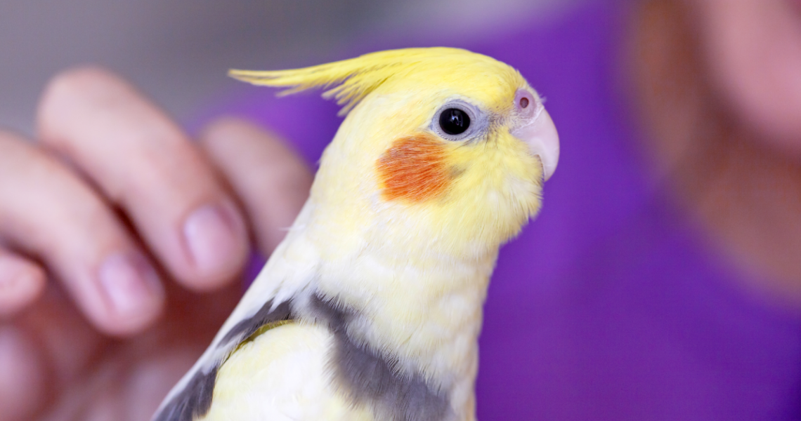
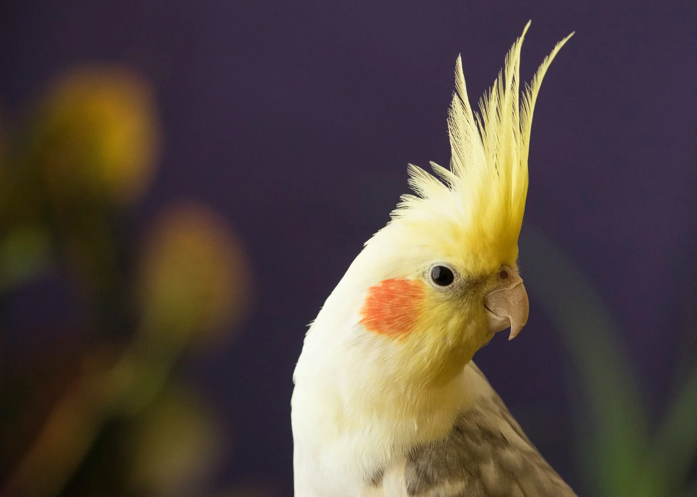

Esses pássaros originários da Austrália são espertos, alegres e enérgicos

As calopsitas são originárias da Austrália. Elas podem ser encontradas em várias cores,
a mais comum costuma ser amarela e cinza, mas também possuem cores branca, somente amarela,
pérola, canela e laranja.
Elas são de natureza dócil e se apegam facilmente aos seus donos.
Por esse motivo elas são famosas no mundo inteiro.
Além disso, são animais de fácil cuidado.
Principais cuidados
É relevante deixar as calopsitas junto com outras pelo fato de serem aves sociáveis.
Isso é importante para que sintam segurança e se interajam com outros pássaros no ambiente.
Elas também precisam de um recinto grande com playgrounds e uma alimentação diversificada composta
de ração, frutas e legumes frescos.
Aves que falam
As calopsitas também são famosas porque são capazes de imitar a fala humana.
Porém, isso requer treinamento por parte dos donos, como repetir frases e cantar músicas.
Entretanto, vale ressaltar que não são todas que aprendem isso, e mesmo que aprendam,
não conseguem repetir a fala humana.

É preciso de meios legais para se adotar uma calopsita
Animais que precisam de atenção
As calopsitas são aves sociáveis e cheias de energia, mas precisam de dedicação diária.
Elas demandam interação, atividades físicas e estímulos mentais para se manterem saudáveis.
Além disso, como podem viver até 30 anos, é essencial que o tutor esteja preparado para um
compromisso de longo prazo, garantindo bem-estar e qualidade de vida ao pet por toda a sua existência.
Adoção de calopsita no Brasil
No Brasil, a adoção de calopsitas e outras aves é regulamentada pela Lei de Proteção à Fauna
(Lei nº 5.197/67) e supervisionada pelo IBAMA. Para garantir a legalidade do processo, é obrigatório
adquirir esses animais apenas de fontes autorizadas, como criadores comerciais devidamente registrados
e estabelecimentos pet que possuam a certificação do órgão ambiental. A prática de comprar aves em feiras
ou de vendedores não autorizados configura infração legal, além de representar riscos ao bem-estar animal
e contribuir para o comércio irregular de espécies. A escolha por canais oficiais de aquisição é
fundamental para assegurar a proteção desses animais e o cumprimento da legislação ambiental.
Se você deseja saber mais sobre a alimentação das calopsitas, leia esse site
aqui!